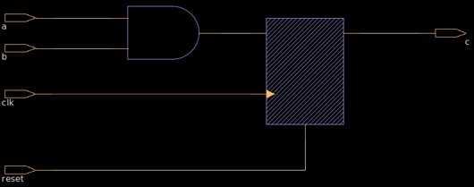

module sequential_example ( input clk, input reset, input a, input b, output reg c ); always @(posedge clk or posedge reset) begin if (reset) c <= 0; else c <= a & b; end endmodule 1.What is the data type of c? 2.What is the module name? 3.If a = 0, b = 1,what is c? 4. How many inputs are in this circuit? 5.What is the operator between a ,b (&,|,^)? 6. Is the logic in this module synchronous or asynchronous?